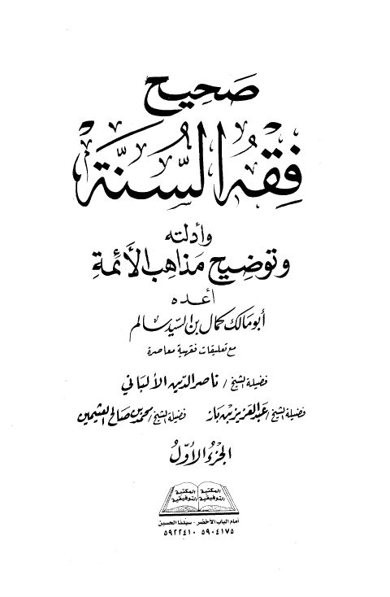

Downloads need an internet connection.
صحيح فقه السنة وأدلته وتوضيح مذاهب الأئمة- أجزاء
Authors: أبو مالك كمال بن السيد سالم
Editors: محمد ناصر الدين الألباني عبد العزيز بن عبد الله بن باز محمد بن صالح العثيمين
Publishers: المكتبة التوفيقية
**▫️ العنوان: صحيح فقه السنة وأدلته وتوضيح مذاهب الأئمة- أجزاء** ▪️ المؤلف: #أبو_مالك_كمال_بن_السيد_سالم ▫️ المحقق: #ناصر_الدين_الألباني • #عبد_العزيز_بن_باز • #محمد_بن_صالح_العثيمين ▪️ الناشر: #المكتبة_التوفيقية ▫️ تاريخ النشر: 1424هـ 2003م ▪️ بلد النشر: القاهرة، #مصر ▫️ الطبعة: 1 ▪️ عدد الأجزاء: 4 ▫️ الصفحات: 1952 ▪️ نوع الوعاء: #كتاب ▫️ التصنيف الرئيسي: #الفقه_وأصوله ۪